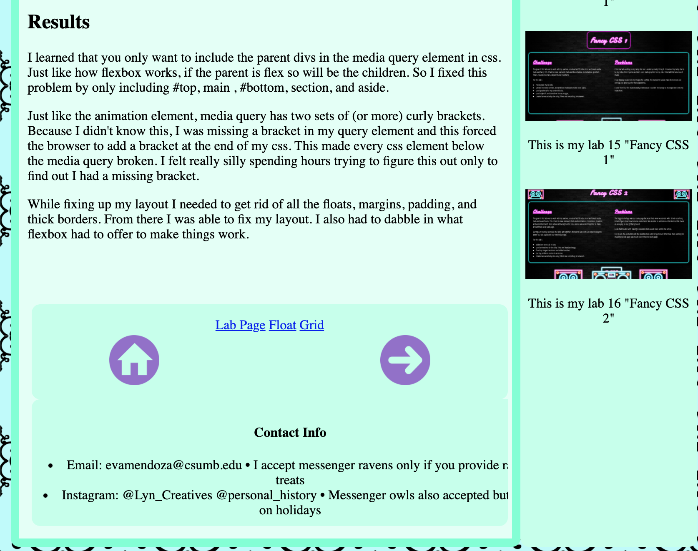
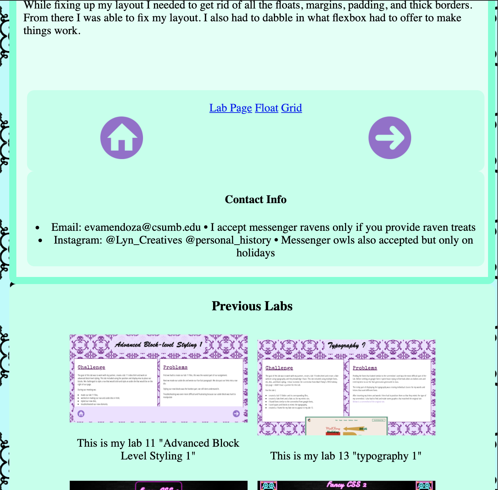

Challenges
For this lab I was told to work with a partner, create a lab 18 page using flexbox layout, and add a media query to make it more responsive. I used the same flexbox layout from lab 17 and I am glad I did. By changing some things in css with what I learned in class I was able to fix some issues that I had from last lab. However using the media query was a bit difficult at first simply because I didn't understand what I was doing.
Problems
Results
I learned that you only want to include the parent divs in the media query element in css. Just like how flexbox works, if the parent is flex so will be the children. So I fixed this problem by only including #top, main , #bottom, section, and aside.
Just like the animation element, media query has two sets of (or more) curly brackets. Because I didn't know this, I was missing a bracket in my query element and this forced the browser to add a bracket at the end of my css. This made every css element below the media query broken. I felt really silly spending hours trying to figure this out only to find out I had a missing bracket.
While fixing up my layout I needed to get rid of all the floats, margins, padding, and thick borders. From there I was able to fix my layout. I also had to dabble in what flexbox had to offer to make things work.
I also experimented with moving #bottom to the inside of Main to see how it looked.
I liked it at first but didn't keep it because once the Aside block wrapped under Main
It didin't look like it belonged there anymore.
 